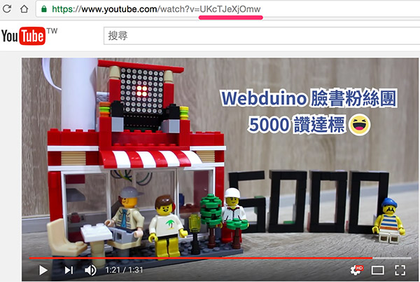
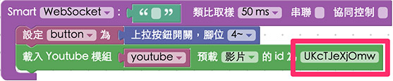
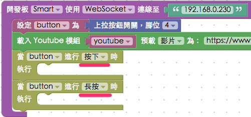
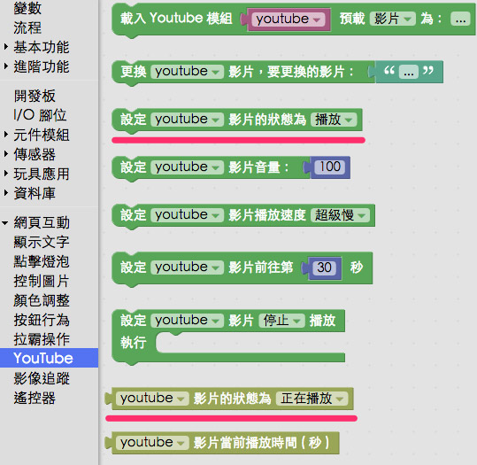
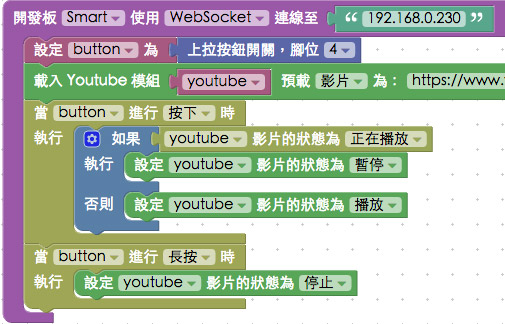
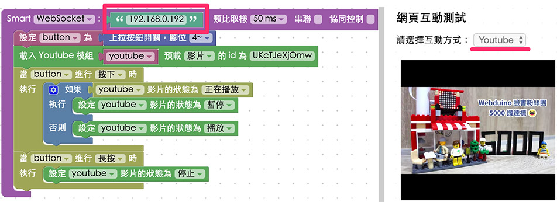

Smart 按鈕開關控制 Youtube
上一篇認識了 Webduino Smart 的按鈕開關，但如果只是按個按鈕顯示一下文字，功能實在是太陽春了，因此這一篇將介紹如何透過開關的行為，操控 Youtube 的影片播放，如此一來只要動動手指，就可以控制影片囉。
Webduino Blockly 操作解析
打開 Webduino Blockly 編輯器 ( http://blockly.webduino.io/?tags=smart )，首先我們放入開發板的積木，下拉選單選擇 WebSocket ( 注意，使用 WebSocket 的工具網址必須是 http 開頭 )，填入開發板的 ip 位址，接著放入按鈕開關的積木，腳位預設為 4 ( 因為 Smart 的按鈕開關為「上拉按鈕」，所以要使用「上拉按鈕開關」 )。
因為我們要使用 Youtube 的功能，所以我們要從左側積木功能選單選擇「載入 Youtube 模組」，拖拉進入編輯區域當中，這個功能會載入 Youtube 模組，記得「只需要載入一次」，如果要換影片則是使用「更換影片」的積木方塊。

不過只有放入載入模組的積木還不夠，還要填入 Youtube 影片的 id 或網址 才可以正確載入，獲取影片 id 的方法很簡單，只要打開 Youtube 影片，看到網址列，最後面 ?v= 接續的這串代碼就是影片 id。( 不包含 ?v= )

將網址或 id 填入積木欄位。

放入按鈕的積木，這邊我們只需要兩個動作，一個是「按下」，另一個是「長按」。

接著我們要透過「設定影片狀態」( 更換影片目前的狀態為播放、暫停、停止...等 ) 以及「當下影片狀態」( 獲取影片當下的狀態 )的積木，來做一些邏輯的判斷。

邏輯的判斷很簡單，只需要在按下按鈕的當下，判斷影片的狀態是否為「正在播放」，只要是正在播放的狀態就把影片「暫停」，除此之外都是讓影片「播放」( 包含停止、播放結束、暫停、尚未開始 )

網頁互動區選擇 Youtube，點選右上方紅色按鈕執行，就可以看到 Youtube 影片載入並開始播放，這時候我們就可以按壓按鈕，控制 Youtube 的影片播放了。( ip 記得換成自己的開發板 ip ) ( 解答：http://blockly.webduino.io/#-KbJYhqQUV_jUUCJRhMp )

範例解析
HTML 的 header 引入 webduino-all.min.js，目的在讓瀏覽器可以支援 WebComponents 以及 Webduino 所有的元件，如果是用 Blockly 編輯工具產生的程式碼，則要額外引入 webduino-blockly.js。
<script src="https://webduino.io/components/webduino-js/dist/webduino-all.min.js"></script>
<script src="https://webduinoio.github.io/webduino-blockly/webduino-blockly.js"></script>
首先看到 HTML 的部分，必須要有一個 id 為 youtube 的 div，作為 Youtube 模組使用。
<div id="player"></div>
JavaScript 的程式碼比較多一點，不過boardReady開頭的程式碼基本上都是一樣，所以我們直接從裡面的幾個分段開始看，這一段主要是 Youtube 模組的載入，使用 Youtube 官方的程式碼，包含了影片的高度、寬度、自動播放和控制項...等內容，而events則是一些影片的事件處理，例如載入的影片 id...等，onPlayerStateChange則是當 Youtube 狀態改變時要做些什麼行為的判斷。
var youtubePlay, youtubeStop, youtubePause;
await new Promise(function (resolve) {
var tag = document.createElement("script");
tag.src = "https://www.youtube.com/iframe_api";
var scptTag = document.getElementsByTagName("script")[0];
scptTag.parentNode.insertBefore(tag, scptTag);
window.onYouTubeIframeAPIReady = function () {
youtube = new YT.Player("player", {
height: "240",
width: "96%",
playerVars: {
autoplay: 1,
controls: 1
},
events: {
onReady: function (evt) {
youtube.loadVideoById({
videoId:"UKcTJeXjOmw"
});
resolve();
},
onStateChange: onPlayerStateChange
}
});
};
});
function onPlayerStateChange(event) {
if(event.data == youtubeStop) {
youtubeStopCallback();
}else if(event.data == youtubePlay){
youtubePlayCallback();
}else if(event.data == youtubePause){
youtubePauseCallback();
}
};
接下來就是按鈕的方法，這裏可以看到當按下按鈕的時候，會判斷youtube.getPlayerState()是否為對應的數字，因此就可以決定影片要播放、暫停還是停止...等動作，而按鈕長按的事件，就直接將影片停下來，並將影片時間歸零。
button.on("pressed", async function(){
console.log("pressed");
if (youtube.getPlayerState() == 1) {
youtube.pauseVideo();
} else {
youtube.playVideo();
}
});
button.on("longPress", async function(){
console.log("longPress");
youtube.seekTo(0);
youtube.stopVideo();
});
以上就是使用 Smart 的微型按鈕開關，控制 Youtube 的操作介紹。 完整程式碼：http://bin.webduino.io/fopag/1/edit?html,js,output 解答：http://blockly.webduino.io/#-KbJYhqQUV_jUUCJRhMp
如果您還想了解更多，可以參考：
2. Blockly 教學：https://goo.gl/Y8sRkl
3. 產品總覽：https://webduino.io/buy.html
4. 露天賣場：http://goo.gl/0Dj9ip